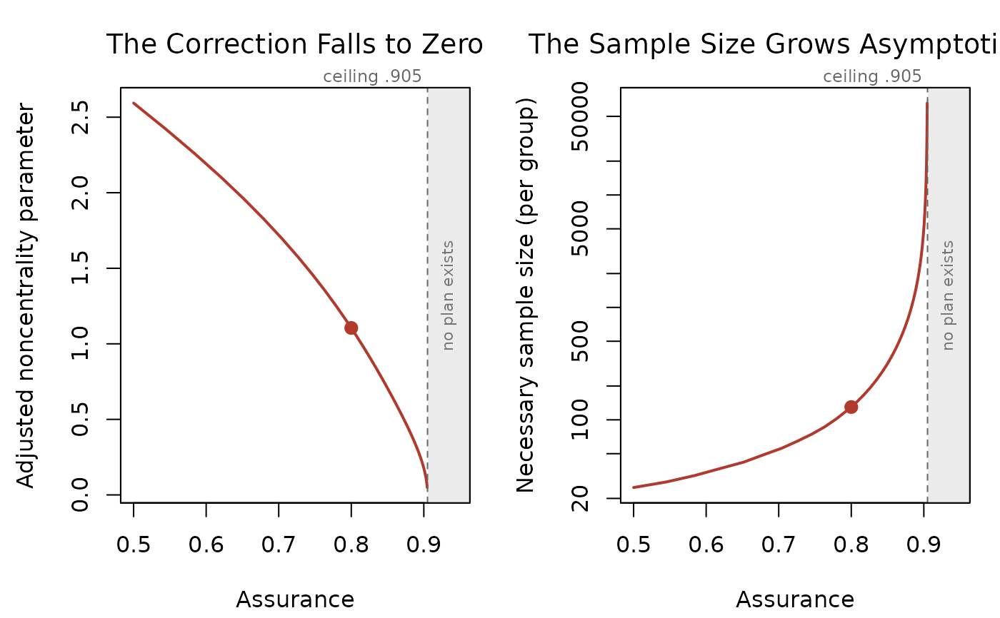
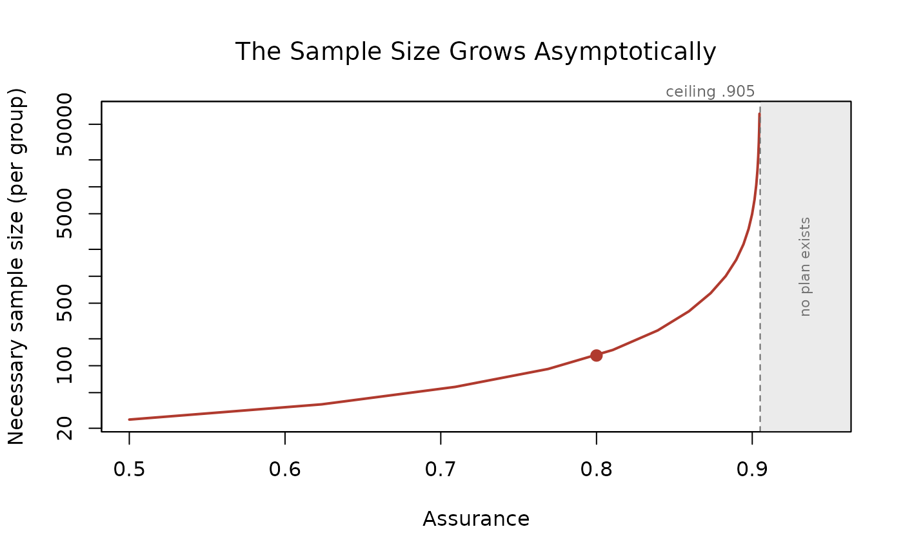

Re-runs the planner that produced x across a range of
assurance values and draws what happens as the requested assurance
approaches the largest value the prior result can support: the bias and
uncertainty adjusted noncentrality parameter falling to zero, and the
sample size it implies growing asymptotically.
Arguments
- x
A plan returned by any
ss_buc_*function.- which
Which panel to draw:
"both"(the default, side by side),"ncp"for the corrected noncentrality parameter alone, or"size"for the sample size alone.- assurance
Assurance values to evaluate.
NULL(the default) builds a grid running fromlowerup to just short of the ceiling.- lower
Smallest assurance to evaluate, used only when
assuranceisNULL. Defaults to .5, the recommended floor, or to half the ceiling when the ceiling itself is below .5.- n_points
Number of assurance values in the automatic grid.
- col
Color for the curve and the marked plan.
- ...
Further arguments passed to the underlying
plotcalls.
Value
Invisibly, a data.frame with columns assurance,
ncp_adjusted, sample_size, and actual_power, one row
per evaluated assurance. The largest supportable assurance travels on the
assurance_ceiling attribute, and the design and sample size unit on
design and sample_size_unit.
Details
Every prior result has a largest supportable assurance, the closed
form \(1 - p/\alpha\) where p is the prior study's
p value and \(\alpha\) is alpha_prior. Request more than
that and the corrected noncentrality parameter is driven to zero, no
sample size attains the target power, and the planner stops. The ceiling
is reported in the printed footer of every plan and named in that error,
but its shape is the point: assurance does not degrade gracefully as it
rises, it hits a wall.
Two panels are drawn, sharing an assurance axis.
The corrected noncentrality parameter, which falls to zero at the ceiling. This is the quantity the correction actually solves for, and the panel shows how little of it survives near the ceiling.
The necessary sample size, on a logarithmic scale, because it spans orders of magnitude over the plotted range. This is the same story in the units a researcher budgets in.
The ceiling is drawn as a dashed vertical line in both panels and the plan's own assurance is marked with a filled point, so a reader can see at a glance how much headroom their prior result has left.
The grid is spaced evenly in the logarithm of the remaining headroom rather than in assurance, so that roughly half the plotted points fall in the last few hundredths below the ceiling. Spacing evenly in assurance would draw the wall as a single jump between two grid points and lose the shape entirely.
The plotted values are returned invisibly as an ordinary
data.frame, one row per assurance, so the figure can be redrawn
with any other graphics system. BUCSS draws it in base graphics and
takes no plotting dependency of its own.
References
Anderson, S. F., & Kelley, K. (2024). Sample size planning for replication studies: The devil is in the design. Psychological Methods, 29, 844–867. doi:10.1037/met0000520
Anderson, S. F., Kelley, K., & Maxwell, S. E. (2017). Sample-size planning for more accurate statistical power: A method adjusting sample effect sizes for publication bias and uncertainty. Psychological Science, 28, 1547–1562. doi:10.1177/0956797617723724
Anderson, S. F., & Maxwell, S. E. (2017). Addressing the 'replication crisis': Using original studies to design replication studies with appropriate statistical power. Multivariate Behavioral Research, 52, 305–324.
Maxwell, S. E., Delaney, H. D., & Kelley, K. (2027). Designing experiments and analyzing data: A model comparison perspective (4th ed.). Routledge.
Taylor, D. J., & Muller, K. E. (1996). Bias in linear model power and sample size calculation due to estimating noncentrality. Communications in Statistics: Theory and Methods, 25, 1595–1610.
See also
ss_buc_sensitivity to audit a plan by simulation, and
vignette("understanding-assurance", package = "BUCSS") for what the
ceiling means.
Author
Ken Kelley (kkelley@nd.edu)
Examples
plan <- ss_buc_independent_t(t_observed = 3, n = 20, assurance = .80)
# The ceiling, drawn: the corrected parameter falls to zero and the
# sample size grows asymptotically.
plot(plan)

# The plotted values, for redrawing elsewhere.
curve_values <- plot(plan, which = "size", n_points = 20)

head(curve_values)
#> assurance ncp_adjusted sample_size actual_power
#> 1 0.5000000 2.5934021 25 0.8108657
#> 2 0.6234693 2.0895166 37 0.8006627
#> 3 0.7093042 1.6706857 58 0.8054001
#> 4 0.7689761 1.3181723 92 0.8029639
#> 5 0.8104595 1.0274984 150 0.8009111
#> 6 0.8392985 0.7975909 248 0.8004368
attr(curve_values, "assurance_ceiling")
#> [1] 0.9050734